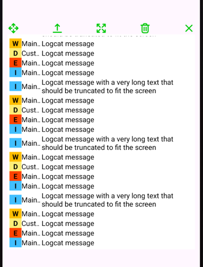
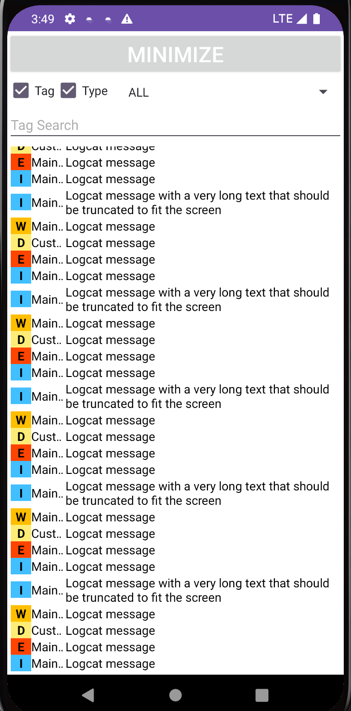

See your Timber logs live on the device — in a draggable floating window or a full-screen list. No laptop, no ADB, no USB cable.
A compact overlay during development, a maximized list when you need the details.


Everything runs inside your debug build via a custom Timber tree.
Logs stream into a draggable, resizable overlay that stays on top of your app. Minimize and maximize between the overlay and the full-screen list.
Verbose, debug, info, warn and error logs are tinted logcat-style, so problems stand out immediately.
Filter by log level and search by tag. Show or hide the tag and level columns to fit the window.
One tap wipes the buffer so you can focus on the reproduction you're chasing right now.
A matching -no-op artifact drops the whole viewer out of release builds — same API, no behavior.
The overlay lives in a foreground service, so logs keep coming while you interact with any other screen.
Three steps and about two minutes.
The real viewer for debug builds, the no-op twin for everything else.
dependencies { debugImplementation("io.github.devapro:timber-viewer:0.1.4") releaseImplementation("io.github.devapro:timber-viewer-no-op:0.1.4") }
The viewer tree feeds logs into the on-device list instead of logcat.
class MyApplication : Application() { override fun onCreate() { super.onCreate() Timber.plant(TimberViewerTree()) // plant Timber.DebugTree() as well if you still want logcat output } }
Grants the notification and overlay permissions it needs, then shows the window.
startLogViewer(this)
minSdk 24 · works with Timber 5.x · Android 6+ overlay permission may need to be granted manually on some devices.
| Timber.v("verbose") | shown in gray |
| Timber.d("debug") | shown in blue |
| Timber.i("info") | shown in green |
| Timber.w("warn") | shown in yellow |
| Timber.e("error") | shown in red |